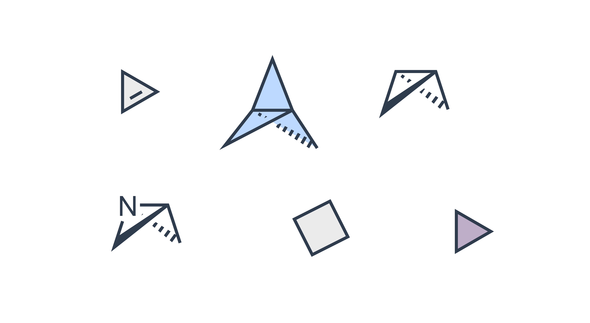

RESEARCH AREA 01

Ring-Strain-Driven Reaction Discovery
Ring strain drives reactivity by releasing strain energy, enabling access to valuable scaffolds. We aim to exploit strain-release strategies to design novel reactions that expand the synthetic toolbox for constructing complex molecules.
Representative Publications
Add publication title and citation here.
View Publication ↗Add publication title and citation here.
View Publication ↗